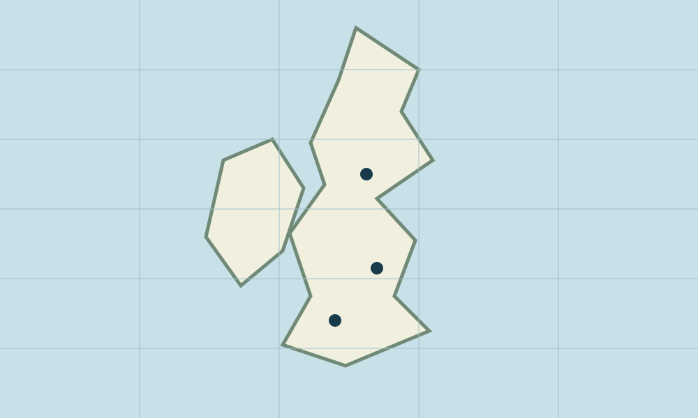

Rainfall map patterns
A fictional rainfall timeline
Six fixed sample frames on a non-geographic illustration. No radar, satellite or weather service is connected.

Fictional rain patch · no measured intensity
Frame 1 of 6 · sample time 00:00
The static first frame is shown. Timeline/layer controls require JavaScript.
Schematic only. No panning, geographic tiles, live map service, storm tracking or planning use.